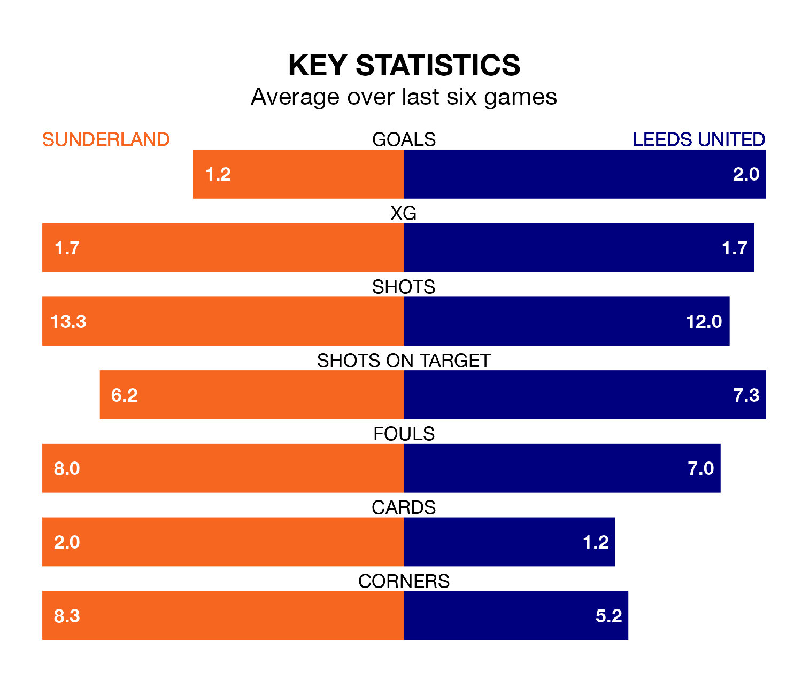

Leeds United come to the Stadium of Light to play Sunderland on late Tuesday in excellent form, having collected 16 points from their last six games.
The visitors have won five and drawn one of their last six fixtures, while the Black Cats have two wins and two draws.
With 36 goals in 20 games so far this season, Leeds are the league's third-highest scorers with 1.8 goals per game. And they are conceding fewer than average, letting in 20 goals at a rate of 1.0 per game.
Sunderland are also above average scorers, with 1.6 goals per game, compared to a league average of 1.4. They have conceded 1.1 goals per game.
United are third in the table after 20 games, of which they have won 12 and drawn five, earning 41 points.
The Black Cats are three places behind the away team in sixth, with nine wins and three draws putting them on 30 points.
With Illan Meslier between the sticks, Leeds can rely on one of the league's safest pair of hands. He has kept seven clean sheets in his 20 appearances this season, and only one other 'keeper – West Bromwich Albion's Alex Palmer – has been able to prevent the opposition scoring on more occasions in the Championship.
In the hosts' net, Anthony Patterson has five clean sheets in 20 games. He has conceded a goal every 82 minutes, 20% more often than the 100 minutes between goals for Meslier.
Sunderland's last match was on Saturday, a 2-1 win against West Bromwich Albion, with Dan Neil and Daniel Ballard getting the goals for the Black Cats.
Leeds beat Blackburn Rovers 2-0 last time out, also on Saturday, with Crysencio Summerville and Daniel James on the scoresheet.
Tuesday's match will be refereed by Dean Whitestone, who has taken charge of 13 Championship games so far this season, issuing one red card and booking 41 players. He has awarded one penalty.
The last Sunderland game Whitestone refereed was a 3-1 home win against Birmingham City on November 11. His last Leeds match was their 1-0 win away at Leicester City on November 3.
